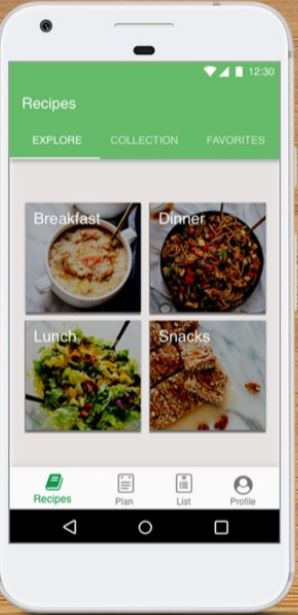
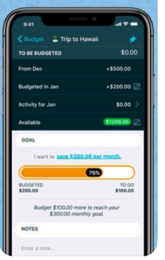
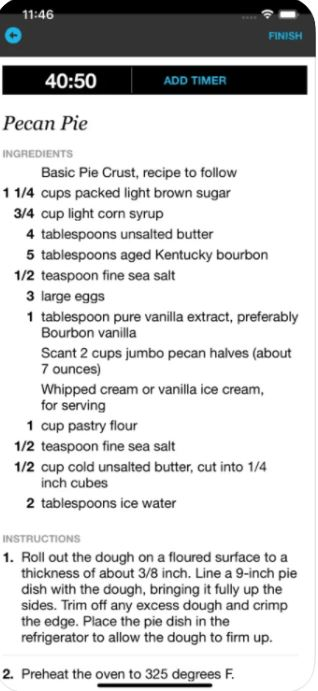
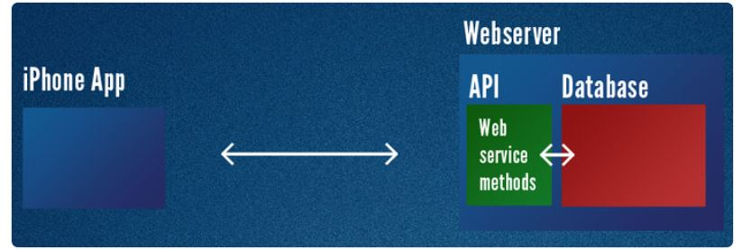

The project will be an app to help you budget and cook meals, you will be able to tell the app your budget and some meals you like and the app will tell you the price of each meal as a whole, when you click on the meal it’ll give you a breakdown of what the ingredients are and how much each ingredient will cost, it will also tell you the recipe it’s using to help you make the meal. You will be able to set favourite meals and use them again later. You will also be able to input how much you spent and the app will keep track of your spending and give you a daily, weekly and monthly total of your spending. Over time it will give you averages and graphs you can use to more accurately budget.
My motivation for this app is that I always end up eating the same thing for long periods of time because I know it’s cheap and how to make it. I am also not good at budgeting my money and feel as though this app would help me diversify my eating habits as well as helping me keep track of how much I am spending on food. This project will also help me develop some IT skills while designing and making the app, I could use this experience to help me differentiate myself from other candidates when going for an entry level IT job which will eventually help me on my path to my ideal job.
The app will have a database of recipes and ingredients as well as the prices of ingredients. I can use a web crawler to collect the recipes from different websites and blogs and have a large collection of recipes for the user. I can use the same process for the prices, and can gather information from various websites and get average prices for the ingredients that will be used. (information on web crawlers found here )
These prices may be based on seasons as well, in the app there will be an option for the user to change the price of each ingredient so they can more accurately see what the meal will cost at the local supermarkets or the website they use for shopping.
The app when first used will try to get some information to help it recommend meals that are within the budget given from the database. It will ask the user for favourite foods and ingredients they like; it will also ask the user for a price range per week they want to spend on food.
The app will search the database for foods that are similar to given favourite meals and any recipes that use the favourite ingredients of the user and give recommendations based on the price range given. The user can also search for specific meals as well and if they are in the database, they will show up and then you can access the ingredients, cost and recipe for it.
There will be a user profile in the app that the user can use to access information like favourite meals, favourite ingredients, recommended meals, budget and spending’s. You will be able to change your price range whenever you want to from the user profile.
When you go to buy your shopping online or at the supermarket you can click on the meal and tell the app you purchased the ingredients in which case the app will automatically add the price of all the ingredients to your spending tab or you can manually input how much you spend each time you shop this will obviously be more accurate than the general prices the app gives.
Each day the app will tell the user in the user profile there daily spending on food you will be able to set this to display weekly or monthly spending. In the spending section of the app there will be a graph of spending for daily, weekly or monthly this gives an easy way to track and display the amount you spend on food. This will allow the user to make a more accurate budget and help with spending habits.
 The technology needed to create a MySQL database I will use a web crawler to collect the information needed into a free MySQL database. As said before the web crawler will search websites for certain information I need, recipes, ingredient prices and anything else I will need.
A quote “MySQL is a relational database management system (RDBMS) developed by Oracle that’s based on structured query language (SQL).” (Quoted from here.)
I will use this database because it’s widely compatible and open sourced, also from what I researched it’s the most popular database because it’s widespread, effective and easy to use. (information found here.)
I will need to setup the app, I'm unfamiliar with this process and new to coding so I will use the MIT App Inventor site linked here. As I go through this process, I will start learning how to use this site with tutorials and gradually learn how to make the app to function as I want it to.
Once I have the app and the database, I will have to link the app with the database, unfortunately I need a middle layer to sit in between my app and the database to manage the transactions between the two. (Information on this is found here.)
Firstly, I have to sign up for web hosting and set up the database, then we have to setup database tables and users this is where I’m going to get my app to connect to my MySQL database, a PHP web service is going to sit on the web server and when the app sends a request, it’ll access the database for requested data and return it to app in a format it can use. (Information found here.) Next, I’ll need to write the PHP Web Service to query the database, then I’ll need to make the app show the data.
I will need to gain some skills in order to create this app, especially in the last step of linking the app to the database I will need to learn a coding language called Swift. I can learn this in a beginner course found here. This will be the biggest hurdle in the process of making this app in my opinion, however I have the time and with effort I believe it will be feasible to achieve this skill.
I will also need to learn how to use MIT App Inventor I will be able to go through tutorials and learn this information here.
There may be additional skills that I may run into as I go through the process of developing this app, to overcome these hurdles and gain the skills I lack I can use google. There is many free tutorials and tips videos that make gaining the skills I require challenging but reasonable.
If the project is successful, I will have created an app that can help people in diversifying the meals they eat as well as finding the cheapest options of meals that will fit their budget. The app will also help people keep track of how much they are spending on food and help them budget more efficiently.
I will have created an app that would help improve my life personally as I tend to eat the same couple of meals over and over because I know how to make them and I know the ingredients and approximately how much they cost. This app will solve that problem by giving me easy to find options that are within my budget as well as helping me keep track of how much I am spending on food so that I can budget more efficiently in the future.
This app may be helpful to lower socioeconomic people to help them budget better and find good meals for cheap prices. According to this website. It was found that approximately 3.24 million people in Australia live below the 50% median income poverty line which is below $457 a week for a single adult or $960 a week for a couple with 2 children. This app could help these people find decent options for meals and budget effectively. As someone who has lived with very little money finding an app that could easily show me meals to make in a certain price range and easily track what I spend in one app, I know this would be helpful.
Also, I believe doing this project will help me gain understanding of a lot of different concepts of app making that would help me improve my IT knowledge and help me get into my first IT job. Gaining more skills and experience and knowledge that will in the long-term lead towards my ideal job goal.